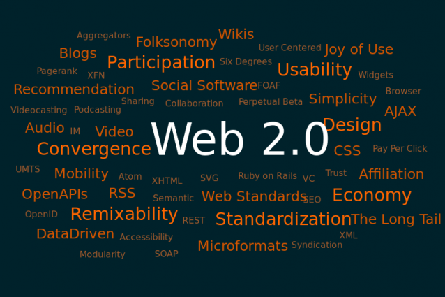
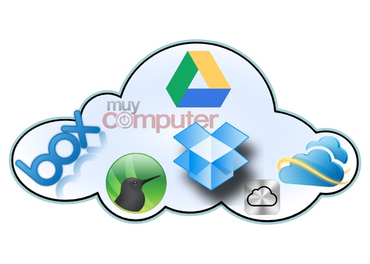

El término Web 2.0 comprende aquellos sitios web que facilitan el compartir información, la interoperabilidad, el diseño centrado en el usuario y la colaboración en la World Wide Web. Un sitio Web 2.0 permite a los usuarios interactuar y colaborar entre sí como creadores de contenido generado por usuarios en una comunidad virtual, a diferencia de sitios web estáticos donde los usuarios se limitan a la observación pasiva de los contenidos que se han creado para ellos. Ejemplos de la Web 2.0 son las comunidades web, los servicios web, las aplicaciones Web, los servicios de red social, los servicios de alojamiento de videos, las wikis, blogs, mashups y folcsonomías. Es la Evolución de las aplicaciones estáticas a dinámicas donde la colaboración del usuario es necesaria.
El término Web 2.0 está asociado estrechamente con Tim O'Reilly, debido a la conferencia sobre la Web 2.0 de O'Reilly Media en 2004. Aunque el término sugiere una nueva versión de la World Wide Web, no se refiere a una actualización de las especificaciones técnicas de la web, sino más bien a cambios acumulativos en la forma en la que desarrolladores de software y usuarios finales utilizan la Web.

El hecho de que la Web 2.0 es cualitativamente diferente de las tecnologías web anteriores ha sido cuestionado por el creador de la World Wide Web Tim Berners-Lee, quien calificó al término como "tan sólo una jerga"- precisamente porque tenía la intención de que la Web incorporase estos valores en el primer lugar.
En conclusión, la Web 2.0 nos permite realizar trabajo colaborativo entre varios usuarios o colaboradores. Además, las herramientas que ofrece la web 2.0 no sólo permitirán mejorar los temas en el aula de clase, sino también pueden utilizarse para trabajo en empresa. La web 2.0 permite a estudiantes y docentes mejorar las herramientas utilizadas en el aula de clase. El trabajo colaborativo esta tomando mucha importancia en las actividades que realicemos en internet.
Redes sociales
Una red social es una forma de representar una estructura social, asignándole un símbolo, si dos elementos del conjunto de actores (tales como individuos u organizaciones) están relacionados de acuerdo a algún criterio (relación profesional, amistad, parentesco, etc.) entonces se construye una línea que conecta los nodos que representan a dichos elementos. El tipo de conexión representable en una red social es una relación diádica o lazo interpersonal, que se pueden interpretar como relaciones de amistad, parentesco, laborales, entre otros.
Las investigaciones han mostrado que las redes sociales constituyen representaciones útiles en muchos niveles, desde las relaciones de parentesco hasta las relaciones de organizaciones a nivel estatal (se habla en este caso de redes políticas), desempeñando un papel crítico en la determinación de la agenda política y el grado en el cual los individuos o las organizaciones alcanzan sus objetivos o reciben influencias.
El análisis de redes sociales estudia esta estructura social aplicando la teoría de grafos e identificando las entidades como "nodos" o "vértices" y las relaciones como "enlaces" o "aristas". La estructura del grafo resultante es a menudo muy compleja. Como se ha dicho, En su forma más simple, una red social es un mapa de todos los lazos relevantes entre todos los nodos estudiados. Se habla en este caso de redes "socio céntricas" o "completas". Otra opción es identificar la red que envuelve a una persona (en los diferentes contextos sociales en los que interactúa); en este caso se habla de "red personal".
Inicio
Almacenamiento en la nube
El almacenamiento en nube o almacenamiento en la nube (del inglés cloud storage), es un modelo de almacenamiento de datos basado en redes, ideado en los «años 1960»,1 donde los datos están alojados en espacios de almacenamiento virtualizados, por lo general aportados por terceros.

Las compañías de alojamiento operan enormes centros de procesamiento de datos. Los usuarios que requieren estos servicios compran o alquilan la capacidad de almacenamiento necesaria. Los operadores de los centros de datos, a nivel servicio, virtualizan los recursos según los requerimientos del cliente. Solo exhiben los entornos con los recursos requeridos. Los clientes administran el almacenamiento y el funcionamiento de los archivos, datos o aplicaciones. Físicamente los recursos pueden estar repartidos en múltiples servidores físicos.
Se puede acceder a los servicios de almacenamiento en nube por diferentes medios, como una web service, API, interfaz web o alguna otra seleccionada por el cliente.
Inicio